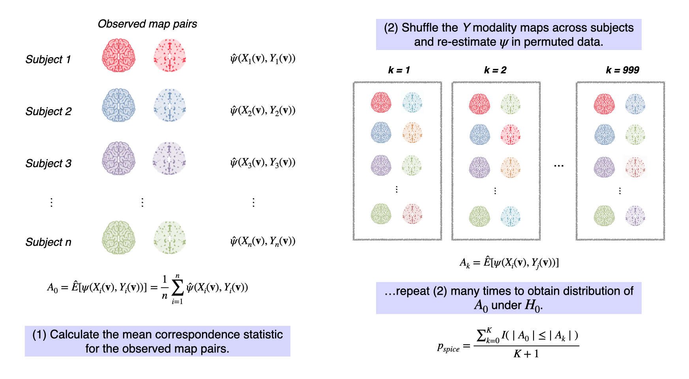

In my current research, I am interested in developing statistical tools to extract and compare patterns in multimodal neuroimaging data.
My first dissertation project described the Simple Permutation-based test of Intermodal CorrEspondence, or SPICE test. SPICE uses a traditional permutation testing framework to test significance of the relationship between two imaging modalities:

A strength of the SPICE test compared to previous methods is that it does not depend on strong statistical assumptions.
This paper is now published in Human Brain Mapping. I also received a runner-up student paper award from the Section on Statistics in Imaging at the Joint Statistical Meetings conference in 2021.
My second dissertation project is motivated by the challenge of adjusting for nuisance variables (e.g., confounders) in neuroimaging studies. We propose a method for feature extraction with built-in adjustment for nuisance variables: Penalized Decomposition Using Residuals, or PeDecURe.
PeDecURe estimates primary directions of variation that both maximize covariance between a variable of interest \(Y\) (e.g., Alzheimer’s diagnosis) and residualized imaging features (\(X^*\)) and mitigate associations with nuisance variables \(A\) (e.g., age and sex) through a penalty on the covariance between those variables and residualized features (\(\widetilde X\)):
where \(X^*\) and \(\widetilde X\) are matrices of residuals we obtain after fitting a model at each location in the image on \(A\) and \(Y\) and subtracting out the effects of \(A\) and \(Y\), respectively.
This work is now published in Biostatistics, and an R package is available on my GitHub.
I’m working on some extensions of the methods described above, including hypothesis testing and spatial localization of inter-modal associations (preprint here). I am also interested in multivariate approaches to quantifying and mapping image-phenotype associations.